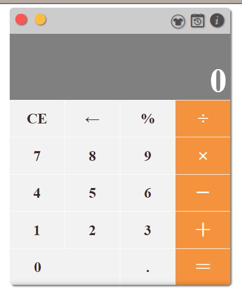
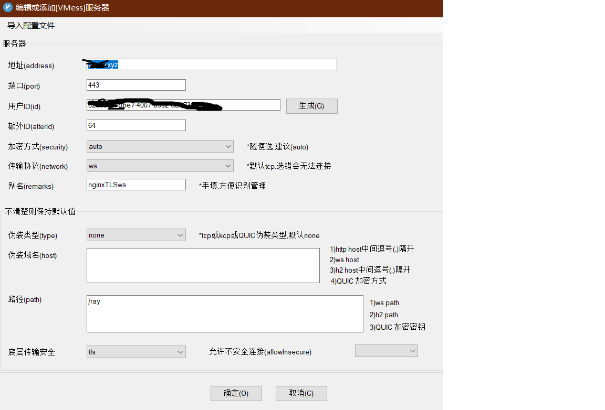

v2ray跨越GFW
一片祥和全赖墙，吾辈凤歌影疏狂。今朝方公倾其智，吓哭当年秦始皇！
websocks+tls+nginx的流量伪装
GFW技术的日新月异，增加了使用google的技术难度(不要问我为什么要用谷歌，你搜下百度不是卖假药就是广告)，随着岁月的流逝，曾经的shadowsocks已经淹没于洪荒之中。
为何需要使用tls包装？因为借助于tls的加密，可以使墙很难识别你的服务器请求到底是一个正规请求还是vpn请求。举例：
当请求https://www.yoursite.com/awesomepath的时候，你的服务器直接返回404 bad request。看上去就是一个正规网站，墙是很难识别的。
有关于tls的原理，请移步https://www.ruanyifeng.com/blog/2014/09/illustration-ssl.html。
前提条件
本文假设你有一定的computer since and technology基础，并且略懂linux。
- 一台境外的vps(例如：谷歌云)请自行申请，有免费的有便宜的，请谷歌！
- 一个域名无需备案(你可以申请一个阿里云的xyz域名比较便宜5元/年),最好是无备案的(不然被police叔叔邀请去喝茶更容易了)。 为什么需要一个域名？因为申请免费的tls证书是需要提供域名的。
- 会使用vim编辑器
操作步骤
1.nginx反向代理
本文使用的是ubuntu系统，使用如下命令安装nginx
# 安装
apt install nginx
当期时间的linux发行版多使用systemctl管理服务，如果你使用旧版本系统，如何启/禁用服务，自行谷歌。
systemctl status nginx
systemctl stop nginx
安装伪站点(让你的服务器成为一个真实存在的服务器)
rm -rf /home/wwwroot && mkdir -p /home/wwwroot && cd /home/wwwroot
git clone https://github.com/dunizb/sCalc.git
配置nginx反向代理指向静态站点
#找到nginx可执行文件绝对路径
whereis nginx
#切换至root账号
#sudo -i
#一般情况如下，查看配置文件路径
/usr/sbin/nginx -t
配置nginx指向你的静态站点
#nginx的配置文件路径默认如下
vim /etc/nginx/nginx.conf
配置我们的网站(将你的域名site.xyz,www.site.xyz都解析到vps服务器)
server {
listen 80;
server_name site.xyz www.site.xyz;# 改成你的域名
index index.html index.htm;
root /home/wwwroot/sCalc;
}
重新启动nginx
systemctl restart nginx
现在通过域名你应该可以能直接访问你的静态网站了，打开一个计算器web应用程序，如下： 
什么是反向代理？ 这里不赘述那么多原理，反向代理是相对(正向)代理而言的，以一言而蔽之曰：
正向代理隐藏真实的客户端，反向代理隐藏真实的服务器。
2.生成证书并使用https
使用TLS需要证书，证书有免费付费的，在此使用免费证书，证书认证机构为Let’s Encrypt。
证书的生成有许多方法，这里使用的是比较简单的方法：使用acme.sh脚本生成，参考acme.sh README。
执行以下命令，acme.sh 会安装到 ~/.acme.sh 目录下。
curl https://get.acme.sh | sh
安装成功后执行source ~/.bashrc以确保脚本所设置的命令别名生效。
生成证书
依据上文配置，确保通过 yoursite.xyz 与 www.yoursite.xyz 在浏览器种能够打开站点。(如果yoursite.xyz跳转到https网址，或因域名解析有缓存)
sudo ~/.acme.sh/acme.sh --issue -d yoursite.xyz --nginx -k ec-256
或者
###标准生成
sudo ~/.acme.sh/acme.sh --issue -d yoursite.xyz --standalone -k ec-256
如果提示错误(按照提示安装即可)
Please install socat tools first.
两种方式都仅仅只是生成证书。使用
--nginx参数并不会修改nginx配置文件(我们还是要手动配置证书路径)。 不同是 –standalone 使用 80 端口对证书进行校验，必须确保 80 端口是空闲的; –nginx 使用域名对应的站点对证书进行校验。
安装ECC证书
安装证书到v2ray目录
sudo ~/.acme.sh/acme.sh --installcert -d yoursite.xyz --fullchainpath /usr/local/etc/v2ray/v2ray.crt --keypath /usr/local/etc/v2ray/v2ray.key --ecc
修改nginx的配置
如下：
server {
#Server configuration
listen 80;
server_name yoursite.xyz www.yoursite.xyz;
return 301 https://yoursite.xyz$request_uri;
}
server {
listen 443 ssl;
ssl on;
ssl_certificate /usr/local/etc/v2ray/v2ray.crt;
ssl_certificate_key /usr/local/etc/v2ray/v2ray.key;
ssl_protocols TLSv1.2 TLSv1.3;
ssl_ciphers ECDHE-ECDSA-AES128-GCM-SHA256:ECDHE-RSA-AES128-GCM-SHA256:ECDHE-ECDSA-AES256-GCM-SHA384:ECDHE-RSA-AES256-GCM-SHA384:ECDHE-ECDSA-CHACHA20-POLY1305:ECDHE-RSA-CHACHA20-POLY1305:DHE-RSA-AES128-GCM-SHA256:DHE-RSA-AES256-GCM-SHA384;
add_header Strict-Transport-Security "max-age=63072000" always;
server_name yoursite.xyz www.yoursite.xyz;
index index.html index.htm;
root /home/wwwroot/sCalc;
error_page 400 401 402 403 404 405 408 410 412 413 414 415 500 501 502 503 506 = https://github.com/404.html;
location /ray {
proxy_redirect off;
proxy_pass http://127.0.0.1:10000;
proxy_http_version 1.1;
proxy_set_header Upgrade $http_upgrade;
proxy_set_header Connection "upgrade";
proxy_set_header Host $http_host;
}
}
证书过期
客户端连接错误io read/write on closed pipe,日志显示x509(ssl)错误
查看linux服务器端证书过期日期
openssl x509 -in /etc/v2ray/v2ray.crt -noout -dates
### 显示如下信息
notBefore=Jul 29 01:47:53 2020 GMT
notAfter=Oct 27 01:47:53 2020 GMT
重新生成证书
### 安装socat
sudo apt-get install socat
sudo systemctl stop nginx
sudo ~/.acme.sh/acme.sh --issue -d yoursite.xyz --standalone -k ec-256
sudo systemctl start nginx
sudo systemctl status nginx
通过nginx生成证书一直报错误：
Verify error:Invalid response from https://github.com/404.html [140.82.113.4]
尝试如下解决方案(不一定有效):
- 在nginx配置文件server节点下添加如下配置
location ~ /.well-known {
allow all;
}
- 在站点根目录下创建对应的文件夹
cd /home/wwwroot/sCalc
sudo mkdir .well-known/acme-challenge
3.安装v2ray
curl -LROJ https://raw.githubusercontent.com/v2fly/fhs-install-v2ray/master/install-release.sh
bash install-release.sh
fhs-install-v2ray 服务端配置 /usr/local/etc/v2ray/config.json
{
"inbounds": [{
"port":10000,
"listen":"127.0.0.1",
"protocol": "vmess",
"settings": {
"clients": [{
"id": "xxxxxxxx",#your id
"level": 1,
"alterId": 64
}]
},
"streamSettings": {
"network": "ws",
"wsSettings": {"path":"/ray"} #跟nginx配置路径保持一致
}
}],
"outbounds": [
{
"protocol": "freedom", #主传出协议
"settings": {}
}
]
}
客户端配置 
4. 使用CDN
- 注册cloudflare
- 添加website,然后会生成2个NameServers
- 进入域名控制台，修改域名dns为第二步提供的dns并禁用掉原有的域名解析
- 使用cloudflare的域名解析
- 设置cloudflare的SSL/TLS加密模式为完全(端到端加密，使用服务器上的自签名证书)
总结
如果你使用的流量过大，你可以使用go语言搭建一个图片站点服务器，然后使用nginx反向代理你的图片服务器，这样更不容易被GFW察觉！